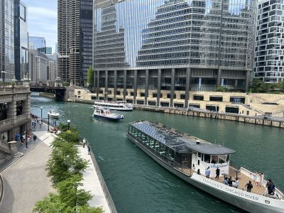
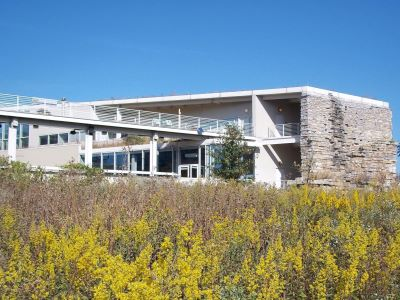

Chicago Travel Guide
Most populous city in Illinois, and the third most populous city in the United States, and is one of the 40 largest urban areas in the world
Top Locations


Places to See in Chicago

Moses8910, CC BY-SA 4.0, via Wikimedia Commons; Image Size Adjusted

Adler Planetarium
Museum dedicated to the study of astronomy and astrophysics, located on the shore of Lake Michigan in Chicago, and was the first planetarium in the United States
-400.jpg)
Edsel Little, CC BY-SA 2.0, via Wikimedia Commons; Image Size Adjusted
.jpg){kind=link}
Alinea
Restaurant awarded three stars from the Michelin Guide and is the only Chicago restaurant to retain a three-star status, Michelin's highest accolade
-400.jpg)
GualdimG, CC BY-SA 4.0, via Wikimedia Commons; Image Size Adjusted

Art Institute of Chicago
One of the oldest and largest art museums in the world with nearly 300,000 works of art
Sir Mildred Pierce, CC BY 2.0, via Wikimedia Commons; Image Size Adjusted

Begin Route 66 sign
Iconic roadside marker designating the ceremonial eastern starting point of America's most famous highway and a popular photo stop for Route 66 travelers.

Sir Mildred Pierce, CC BY 2.0, via Wikimedia Commons; Image Size Adjusted
Burnham Park
Park situated along 6 miles (9.7 km) of Lake Michigan shoreline, and connects Grant Park at 14th Street to Jackson Park

Grinnell Point and Swiftcurrent Lake from the Many Glacier Hotel
Jeff P from Berkeley, CA, USA, CC BY 2.0, via Wikimedia Commons; Image Size Adjusted
.jpg){kind=link}
Chicago Architecture Boat Tour
Narrated river cruise showcasing more than a century of architectural innovation through close-up views of iconic skyscrapers, historic landmarks, and modern engineering achievements.

John Picken, CC BY 2.0, via Wikimedia Commons; Image Size Adjusted

Chicago L
The Chicago "L" (short for "elevated") is the rapid transit system serving the city of Chicago and some of its surrounding suburbs in Illinois

Alanscottwalker, CC BY-SA 3.0, via Wikimedia Commons; Image Size Adjusted
Chicago Lakefront Trail
18.5-mile-long partial shared use path located along the western shore of Lake Michigan in Chicago passes through and connects Chicago's four major lakefront parks along with various beaches and recreational amenities
-400.jpg)
Ken Lund from Reno, Nevada, USA, CC BY-SA 2.0, via Wikimedia Commons; Image Size Adjusted
.jpg){kind=link}
Chicago Loop
Grinnell Point and Swiftcurrent Lake from the Many Glacier Hotel Jeff P from Berkeley, CA, USA, CC BY 2.0, via Wikimedia Commons; Image Size Adjusted

Jrbarc!, CC BY-SA 4.0, via Wikimedia Commons; Image Size Adjusted

Chicago Riverwalk
Multi-use public space on the south bank of the Chicago River, featuring bars, cafes and restaurants, and other amenities

Jrbarc!, CC BY-SA 4.0, via Wikimedia Commons; Image Size Adjusted
Chicago St. Patrick's Day
Annual citywide celebration featuring the famous emerald-green river dyeing, a large downtown parade, Irish cultural traditions, live entertainment, and festive community events.

Jrbarc!, CC BY-SA 4.0, via Wikimedia Commons; Image Size Adjusted
Chicago Stock Exchange Arch
Preserved ornamental entrance arch from an 1893 architectural landmark, showcasing the distinctive design work of Adler and Sullivan and the legacy of the Chicago School of Architecture.
MauraWen, CC BY-SA 4.0, via Wikimedia Commons; Image Size Adjusted

DuSable Black History Museum and Education Center
Dedicated cultural institution preserving, interpreting, and celebrating African American history, art, and culture through exhibitions, collections, educational programs, and community engagement.

MauraWen, CC BY-SA 4.0, via Wikimedia Commons; Image Size Adjusted
Ernest Hemingway Birthplace
Restored Victorian home preserving the early years of a renowned American author through period furnishings, family artifacts, and guided historical tours.

David Wilson from Oak Park, Illinois, USA, CC BY 2.0, via Wikimedia Commons; Image Size Adjusted

Field Museum of Natural History
Popular natural-history museum due to its extensive scientific-specimen and artifact collections and is one of the largest such museums in the world
Grinnell Point and Swiftcurrent Lake from the Many Glacier Hotel
Jeff P from Berkeley, CA, USA, CC BY 2.0, via Wikimedia Commons; Image Size Adjusted
Fountain of Time
Sculpture by Lorado Taft, measuring 126 feet 10 inches in length, situated at the western edge of the Midway Plaisance within Washington Park

Jeff P from Berkeley, CA, USA, CC BY 2.0, via Wikimedia Commons; Image Size Adjusted
Frank Lloyd Wright Prairie School of Architecture Historic District
Nationally recognized historic residential district containing one of the largest concentrations of Prairie School architecture, with dozens of architecturally significant homes designed by Frank Lloyd Wright and his contemporaries.

Stilfehler, CC BY-SA 4.0, via Wikimedia Commons; Image Size Adjusted

Frederick C Robie House
Building designed as a single family home by architect Frank Lloyd Wright and is renowned as the greatest example of Prairie School, the first architectural style considered uniquely American

Daniel Chester French, CC BY-SA 4.0, via Wikimedia Commons; Image Size Adjusted

Graceland Cemetery
Large historic garden cemetery where among the cemetery's 121 acres are the burial sites of several well-known Chicagoans

Adam sk, CC BY-SA 3.0, via Wikimedia Commons; Image Size Adjusted

Grant Park
Large urban park located within the city's central business district, featuring Millennium Park, Buckingham Fountain, the Art Institute of Chicago, and the Museum Campus

Michael Christensen, CC BY-SA 4.0, via Wikimedia Commons; Image Size Adjusted

Jackson Park
551.5-acre park located on the South Side of Chicago, is one of the largest and most historically significant parks in the city

Paul R. Burley, CC BY-SA 4.0, via Wikimedia Commons; Image Size Adjusted

Leaning Tower of Niles
Replica of the Leaning Tower of Pisa

Sea Cow, CC BY-SA 4.0, via Wikimedia Commons; Image Size Adjusted
_4-1-22.jpg){kind=link}
Lincoln Park
1,208-acre park situated along Lake Michigan on the North Side of Chicago, is the second-most-visited city park in the United States, behind Central Park
Paul R. Burley, CC BY-SA 4.0, via Wikimedia Commons; Image Size Adjusted
Lizzadro Museum of Lapidary Art
Museum dedicated to gemstones, minerals, fossils, jade carvings, and lapidary masterpieces that showcase the artistry and science of transforming stone into decorative works.
Paul R. Burley, CC BY-SA 4.0, via Wikimedia Commons; Image Size Adjusted
Lou Mitchell's
Historic diner serving classic American breakfasts and lunches, renowned for its homemade baked goods, fresh coffee, and longstanding association with the beginning of Route 66.

Ken Lund from Reno, Nevada, USA, CC BY-SA 2.0, via Wikimedia Commons; Image Size Adjusted
.jpg){kind=link}
Magnificent Mile
Lou Stejskal, CC BY 2.0, via Wikimedia Commons; Image Size Adjusted

Photograph: Conrad LeeSculpture: Lorado Taft (1860-1936), Public domain, via Wikimedia Commons; Image Size Adjusted

Midway Plaisance
Chicago public park on the South Side of Chicago, Illinois, running through the southern portion of the University of Chicago campus

; Image Size Adjusted
Millenium Park
Park located in the Loop community area of Chicago and features a variety of public art has become the number one tourist attraction in the Midwestern United States

David Wilson, CC BY 2.0, via Wikimedia Commons; Image Size Adjusted

Morton Arboretum
Public garden, and outdoor museum covering 1,700 acres, includes cataloged collections of trees and other living plants, gardens, and restored areas
-400.jpg)
Leandro Neumann Ciuffo, CC BY 2.0, via Wikimedia Commons; Image Size Adjusted
.jpg){kind=link}
Museum of Science and Industry
Science museum featuring over 2,000 exhibits, displayed in 75 major halls
Leandro Neumann Ciuffo, CC BY 2.0, via Wikimedia Commons; Image Size Adjusted
National Museum of Mexican Art
A vibrant art museum showcasing over 3,600 years of Mexican, Mexican-American, and Chicano art and culture through an extensive permanent collection and rotating exhibitions.
-400.jpg)
Tony Hisgett from Birmingham, UK, CC BY 2.0, via Wikimedia Commons; Image Size Adjusted
.jpg){kind=link}
Navy Pier
Over 50 acres of parks, gardens, shops, restaurants, family attractions and exhibition facilities and is one of the top destinations in the Midwestern United States
Chicago Lakefront Trail
Alanscottwalker, CC BY-SA 3.0, via Wikimedia Commons, via Wikimedia Commons; Image Size Adjusted
Oak Park
Most populous city in Illinois, and the third most populous city in the United States, and is one of the 40 largest urban areas in the world

Daderot, CC0, via Wikimedia Commons; Image Size Adjusted

Oriental Institute Museum
Archaeology museum exhibiting an extensive collection of artifacts related to ancient civilizations

Woodlot, CC BY-SA 3.0, via Wikimedia Commons; Image Size Adjusted

Peggy Notebaert Nature Museum
Interactive natural history museum featuring live animals, immersive exhibits, and a renowned butterfly sanctuary that highlights regional ecology and environmental conservation.

Matthew Dillon, CC BY 2.0, via Wikimedia Commons; Image Size Adjusted

Pullman National Monument
The first model, planned industrial community in the United States

Richie Diesterheft, CC BY-SA 2.0, via Wikimedia Commons; Image Size Adjusted

Richard H Driehaus Museum
Museum displaying the prevailing design, architecture, and decorating tastes of Gilded Age America and the art nouveau era in permanent and special exhibitions

Bohao Zhao, CC BY 3.0, via Wikimedia Commons; Image Size Adjusted

Rockefeller Chapel
Gothic Revival chapel on the campus of the University of Chicago
-400.jpg)
Tony Hisgett from Birmingham, UK, CC BY 2.0, via Wikimedia Commons; Image Size Adjusted
.jpg){kind=link}
Shedd Aquarium
Indoor public aquarium with its 5 million US gal aquarium was for some time the largest indoor facility in the world and today it holds about 32,000 animals

Goldnpuppy, CC BY-SA 4.0, via Wikimedia Commons; Image Size Adjusted

St Mary of Angels
Historic Roman Catholic church featuring monumental Baroque-inspired architecture, ornate interior artwork, soaring domes, and regularly scheduled worship services.
Goldnpuppy, CC BY-SA 4.0, via Wikimedia Commons; Image Size Adjusted
Swedish American Museum
Museum dedicated to preserving Swedish American heritage through cultural exhibits, historic artifacts, folk traditions, and stories of immigration, community life, and identity in the United States.
-400.jpg)
Brian Crawford from Oak Park, IL, USA, CC BY-SA 2.0, via Wikimedia Commons; Image Size Adjusted
.jpg){kind=link}
Unity Temple
Church designed by architect Frank Lloyd Wright, is considered to be one of Wright's most important structures dating from the first decade of the twentieth century
-400.jpg)
Joseph Gage from USA, CC BY-SA 2.0, via Wikimedia Commons; Image Size Adjusted
.jpg){kind=link}
Waterfall Glen Forest Preserve
Expansive nature preserve featuring woodlands, prairies, scenic overlooks, a waterfall, and a multi-use trail system popular for hiking, biking, horseback riding, and wildlife observation.
-400.jpg)
Lydia Fizz from Vancouver, Canada, CC BY 2.0, via Wikimedia Commons; Image Size Adjusted
.jpg){kind=link}
Wrigley Field
Historic Major League Baseball stadium known for its ivy-covered outfield walls, hand-operated scoreboard, distinctive architecture, and longstanding role in professional baseball.
Overview
Chicago is the third-most populous city in the United States and the largest in Illinois, with about 2.7 million residents in the city and more than 9 million in the metropolitan area. Sitting on the southwestern shore of Lake Michigan, the "Windy City" is a global hub for finance, commerce, transportation, culture and architecture. It is famous for its skyline, deep-dish pizza, blues and jazz, comedy, world-class museums and devoted sports fans, and it is regularly named one of the best big cities in America for visitors, drawing a record 58 million visitors in 2018.
People come to Chicago to see the skyline from the water and from the sky, walk the lakefront and the Chicago Riverwalk, visit Millennium Park and its Cloud Gate sculpture ("the Bean"), shop on the Magnificent Mile, tour world-famous museums, catch a game at Wrigley Field and eat their way through dozens of neighborhoods. Chicago is also a major convention city and home to O'Hare International Airport, one of the busiest airports in the world, and it is a friendly, walkable and more affordable alternative to New York for a big-city getaway. Its summers are lively with festivals and beach days, and its winters bring holiday markets, ice skating and cozy dining.
The area was home to Native American peoples including the Potawatomi, Miami and Illinois, and its name comes from a Native American word often translated as "wild onion" or "garlic" place. Jean Baptiste Point du Sable, a Black trader of Haitian descent, established a settlement at the mouth of the Chicago River in the 1780s and is regarded as Chicago's first permanent non-Native resident. Chicago was incorporated as a city in 1837, and its position between the Great Lakes and the Mississippi River watershed, together with the opening of the Illinois and Michigan Canal and the arrival of the railroads, made it a hub for grain, lumber, meatpacking and manufacturing. The Great Chicago Fire of 1871 destroyed much of the city, killing about 300 people and leaving roughly 100,000 homeless, but the rebuilding that followed drew architects from around the world. Chicago hosted the 1893 World's Columbian Exposition, grew with waves of European immigrants and with the Great Migration of Black Americans from the South in the 20th century, and became a center for jazz, blues and house music. Today it is a diverse city of distinct neighborhoods.
Chicago is the birthplace of the skyscraper. The ten-story Home Insurance Building, completed in 1885 and designed by William Le Baron Jenney, is considered the world's first steel-framed skyscraper, and the Chicago School of architecture and later figures such as Louis Sullivan, Daniel Burnham, Ludwig Mies van der Rohe and Skidmore, Owings & Merrill shaped modern design. The Willis Tower, completed in 1974, rises 1,451 feet and was the tallest building in the world for nearly 25 years. The John Hancock Center, Wrigley Building, Tribune Tower, Marina City, Aqua and the Trump International Hotel & Tower fill out one of the most admired skylines anywhere, and the Chicago architecture boat tour is one of the best ways to appreciate it. Nearby Oak Park is home to Frank Lloyd Wright's Prairie School houses, and the Robie House in Hyde Park is among his masterpieces.
The Loop is Chicago's central business district and the heart of downtown. It takes its name from the circle of elevated train tracks, built in 1897, that encloses the area. Within a compact, walkable grid are the Willis Tower and its Skydeck, the theater district, State Street department stores, the Chicago Cultural Center, the Harold Washington Library, Millennium Park, the Art Institute of Chicago and many historic skyscrapers, including the Rookery, Monadnock, Marquette and Auditorium buildings. Public art by Picasso, Miró and Chagall dots the plazas, and the Loop is easily reached by every "L" line.
The Magnificent Mile is a roughly one-mile stretch of Michigan Avenue north of the Chicago River to Oak Street, lined with flagship stores, luxury hotels, restaurants and landmark buildings. It earned its nickname in the 1940s and grew after the opening of the Michigan Avenue Bridge in 1920. Highlights include the Chicago Water Tower, one of the few structures to survive the 1871 fire, the John Hancock Center with its 360 Chicago observation deck, the Wrigley Building, Tribune Tower and the Drake Hotel. The street is dressed in thousands of lights for the holidays, and the Magnificent Mile Lights Festival kicks off the season in November.
The Chicago "L" is the city's rapid transit system, operated by the Chicago Transit Authority. First opened in 1892, it is one of the oldest in the country and runs both on elevated tracks and underground. Eight color-coded lines (Red, Blue, Brown, Green, Orange, Pink, Purple and Yellow) serve around 145 stations, with the Blue Line connecting O'Hare International Airport and the Orange Line serving Midway Airport. Most major visitor areas are reachable by "L" and bus, and fares are paid with a Ventra card or a contactless card. Riding the elevated Brown Line or the Loop gives close-up views of the city's architecture, and it is the best way to avoid parking costs and downtown traffic.
Chicago has about 26 miles of public lakefront, and thanks to a long-held ideal that the shoreline should remain "forever open, clear and free," almost all of it is parkland and beach. The 18-mile Chicago Lakefront Trail links beaches, harbors and parks for walkers, runners and cyclists. Popular swimming beaches include Oak Street, North Avenue, Montrose and 63rd Street, with lifeguards from Memorial Day through Labor Day, and the water stays cold enough that most swimmers wait for late July and August. Other lakefront highlights are Navy Pier, Burnham Park, Grant Park, Museum Campus, Lincoln Park and the sailing harbors, with Lake Shore Drive offering scenic drives along the water.
Top sights include Millennium Park with Cloud Gate and Crown Fountain, Navy Pier with its Centennial Wheel, the Willis Tower Skydeck and its glass Ledge, 360 Chicago at the Hancock Center, the Chicago Riverwalk, Wrigley Field, Buckingham Fountain in Grant Park, the Historic Route 66 "Begin" sign, the Michigan Avenue bridges and the architecture river cruise. Others are Graceland Cemetery, Pullman National Monument, the Driehaus Museum and the Ernest Hemingway Birthplace in Oak Park.
Chicago has outstanding museums. The Art Institute of Chicago is one of the oldest and largest art museums in the United States, with Impressionist and American collections including American Gothic and Nighthawks. The lakefront Museum Campus holds the Field Museum, home of the T. rex "Sue," the Shedd Aquarium and the Adler Planetarium, and the Museum of Science and Industry in Hyde Park is the largest science museum in the Western Hemisphere. Others include the Chicago History Museum, Peggy Notebaert Nature Museum, DuSable Black History Museum, National Museum of Mexican Art, Oriental Institute Museum and Swedish American Museum. Chicago is also a performing arts capital, with the Chicago Symphony Orchestra, Lyric Opera, Steppenwolf and Goodman theaters, Second City comedy, and blues and jazz clubs, plus festivals including Lollapalooza and the Chicago Blues Festival.
Chicago has more than 600 parks. Lincoln Park, the city's largest at over 1,200 acres, includes the free Lincoln Park Zoo and the Lincoln Park Conservatory. Grant Park is called Chicago's front yard, Millennium Park hosts free concerts and an ice rink, and Jackson Park, Washington Park and the Midway Plaisance on the South Side were part of the 1893 World's Fair landscape designed by Frederick Law Olmsted. Visitors can also explore Calumet Park, Oz Park and, outside the city, the Morton Arboretum and Waterfall Glen Forest Preserve.
Chicago is among the best food cities in the United States. The Michelin Guide has covered Chicago since 2011, and the city has many starred restaurants, among them the three-Michelin-starred Alinea, a pioneer of modern, experimental cooking. Chicago is famous for deep-dish pizza, introduced in the 1940s and popularized by Pizzeria Uno and Lou Malnati's, plus stuffed pizza, thin tavern-style pizza, the Chicago-style hot dog (all-beef, on a poppy-seed bun, with toppings but never ketchup), the Italian beef sandwich, the Maxwell Street Polish, the Puerto Rican jibarito, Garrett popcorn and the brownie, which is said to have originated at the Palmer House. Breakfast at Lou Mitchell's, near the start of Route 66, is a classic. The city is also known for ethnic neighborhoods that serve outstanding international food, including Mexican food in Pilsen, Chinese in Chinatown, Greek in Greektown, Italian in Little Italy, Indian and Pakistani on Devon Avenue, Vietnamese on Argyle, Polish in Avondale and Swedish in Andersonville.
Chicago fields teams in every major sport and has a passionate fan base. The Cubs (MLB) play at historic Wrigley Field and won the World Series in 2016 after a 108-year drought, while the White Sox (MLB) play on the South Side at Rate Field. The Bears (NFL) and Fire FC (MLS) play at Soldier Field, and the Bulls (NBA), who won six championships in the 1990s with Michael Jordan, and the Blackhawks (NHL) share the United Center. The Sky (WNBA) play at Wintrust Arena and the Red Stars play in the NWSL. The Chicago Marathon, one of the world's major marathons, takes place each October.
Chicago has four distinct seasons. Winters are cold, windy and snowy, with January highs near freezing, while summers are warm and humid with highs in the 80s °F. Summer is the peak season, with Lollapalooza, the Taste of Chicago, the Air and Water Show, Pride Parade and Blues and Jazz festivals, lakefront beaches and baseball. Spring brings Opening Day at Wrigley and the dyeing of the Chicago River green for St. Patrick's Day, and autumn offers cooler weather, fall color and the Chicago Marathon. Winter has a magic of its own, with Christkindlmarket at Daley Plaza from late November through Christmas Eve, the Magnificent Mile Lights Festival, ice skating at Millennium Park and Maggie Daley Park and the Chicago Auto Show. Seasonal weather does affect access: most beach amenities and lifeguards are only in service from Memorial Day to Labor Day, boat and river tours generally run from spring through fall, Navy Pier's outdoor attractions are scaled back in winter, and waves and ice can close sections of the Lakefront Trail and flood Lake Shore Drive during storms. The city plows its streets quickly, but heavy snow and wind chills below zero can disrupt travel, so check conditions before visiting in winter.
Sources: This article uses material from the Wikipedia articles "Chicago" and "History of Chicago", which are released under the Creative Commons Attribution-Share-Alike License 3.0. Additional information from Choose Chicago, the Chicago Transit Authority, the Chicago Park District, the Michelin Guide Illinois, the National Weather Service Chicago, the Chicago Architecture Center, the City of Chicago and the official websites of the attractions, museums and teams mentioned.


-1000.jpg)
.jpg){kind=link}


-1000.jpg)
.jpg){kind=link}